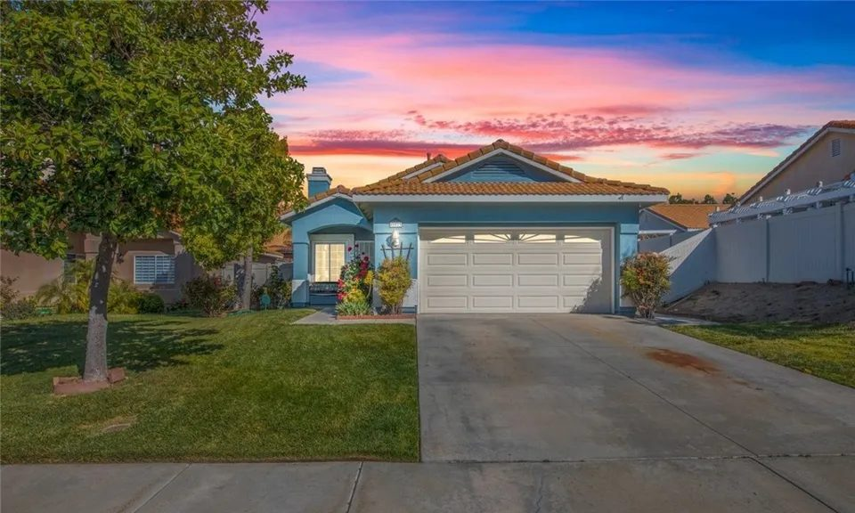
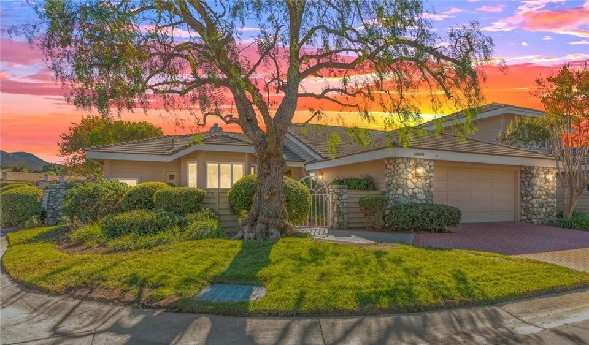
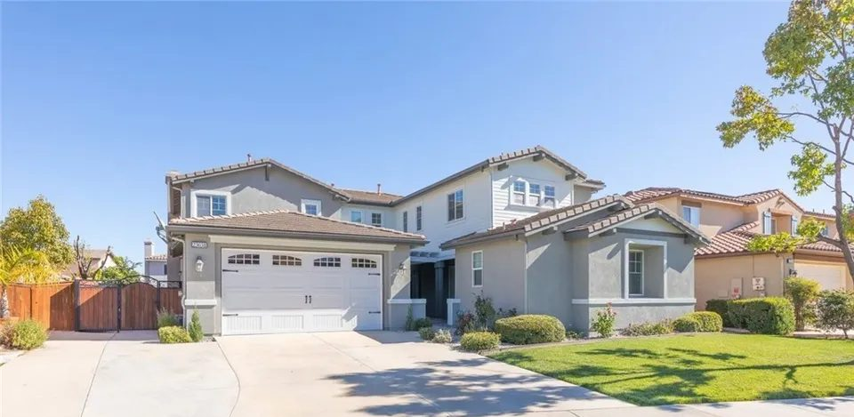
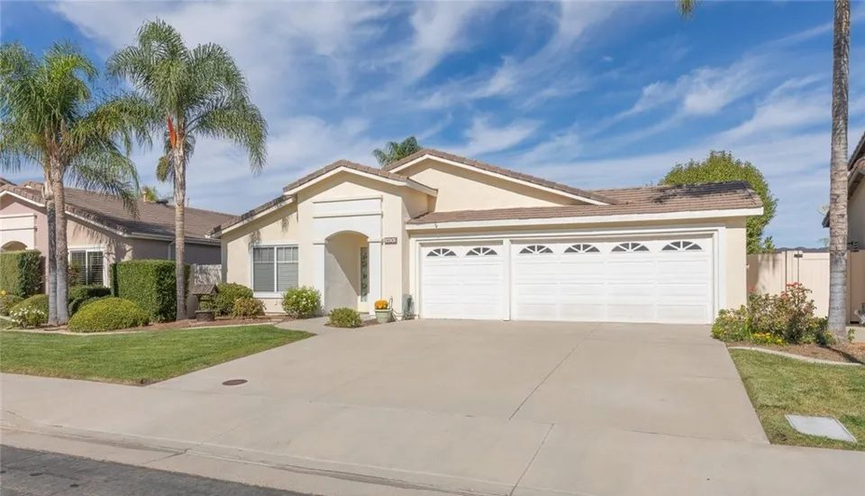
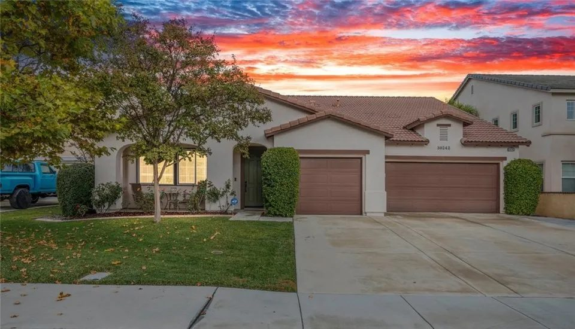
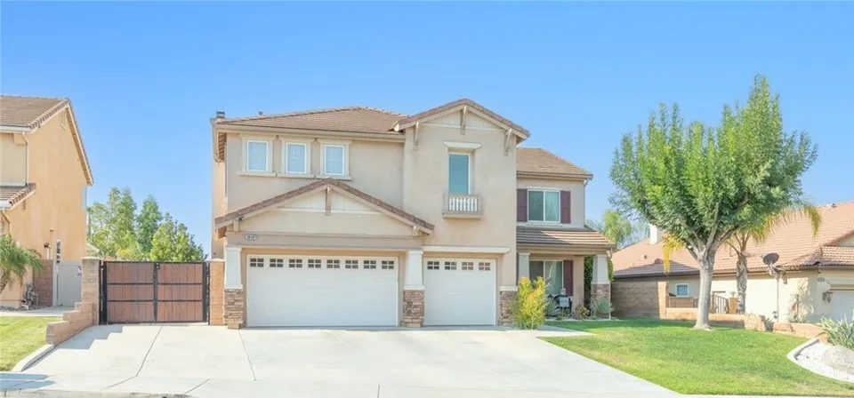
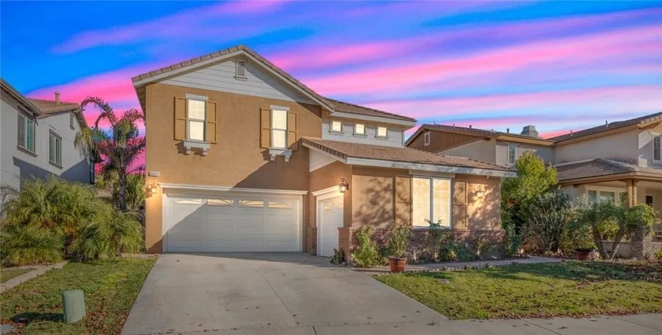
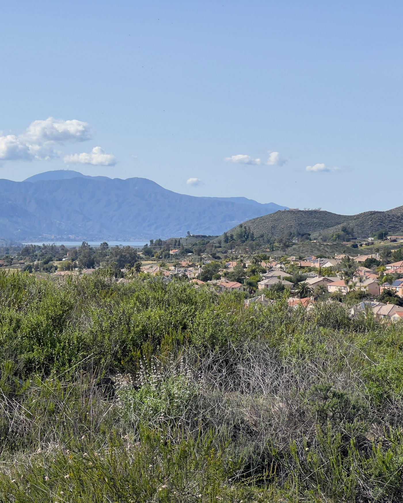
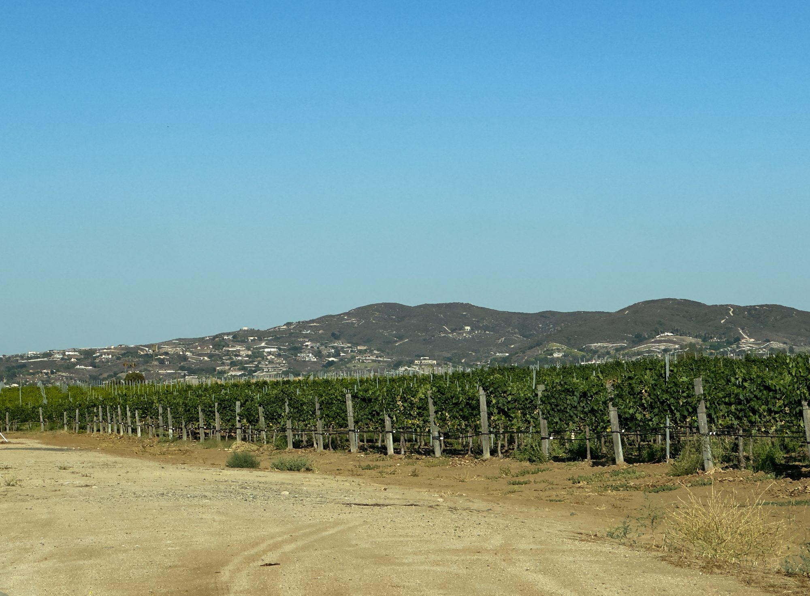
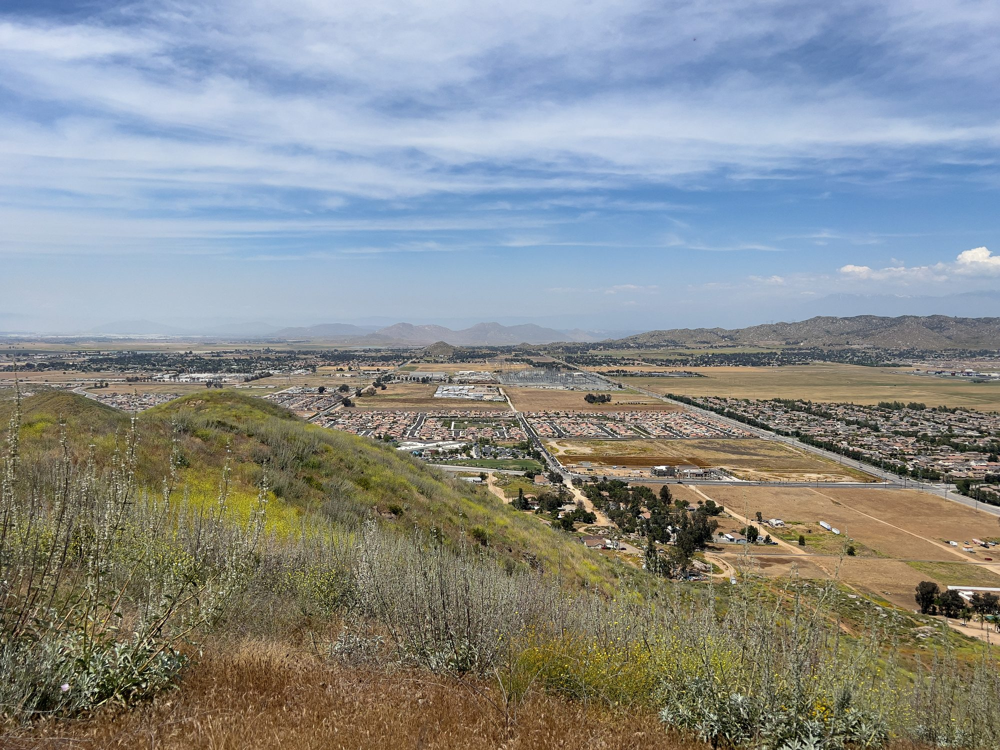

01

Murrieta, Riverside County
Homes from the 1884 town site to the foothills of the Santa Rosa Plateau, with saved searches and what Jim looks at before you make an offer.
Murrieta at a glance
Murrieta sits in southwestern Riverside County, between the Santa Ana and San Jacinto mountains, where Interstate 15 and Interstate 215 meet. Voters approved cityhood in November 1990, and the City incorporated on July 1, 1991, with about 24,000 people.
Downtown began as a railroad town site in 1884. Most of the rest has been built since the freeways were widened in the 1980s, and the City's General Plan now counts more than 100,000 people. West of Interstate 15 the land climbs toward the Santa Rosa Plateau, and large rural lots remain near the foot of the Santa Ana Mountains and along Los Alamos Road.
Saved searches
Each card opens a live search of MLS listings, updated as they change.
01

02

03

04
<!-- IDX_ZONE: homes-for-sale-murrieta-ca-feed -->
The newest Murrieta listings in one compact row, six to eight homes. Builder places the Showcase hotsheet shortcode here in its compact layout.
Juan Murrieta and his partners bought 52,000 acres of the Temecula and Pauba ranchos in 1873. In 1884 the Temecula Land and Water Company bought out the Murrieta brothers and laid out the town site: 160 acres in 537 lots beside the California Southern Railway depot. Daily trains stopped here until 1935.
The City's Historic Murrieta Specific Plan covers that original town site, about 250 acres between Kalmia Street, Ivy Street, Hayes Avenue and Jefferson Avenue. On its edge, the 34-acre Town Square gathers City Hall, the police and fire departments and the Murrieta Public Library around a town green and an amphitheater.
About 2,200 people lived in Murrieta in 1980. By 1990 the count had passed 24,000, after the freeways were widened and new tracts went up, and the building went on after cityhood. Neighborhoods now spread out on both sides of Interstate 15 and Interstate 215, with shopping centers and business parks along the freeways and the major streets.
Some of the newer neighborhoods sit inside one of the City's Community Facilities Districts, known as Mello-Roos, formed to pay for public improvements or services. Owners inside one pay a special tax each year on top of the regular property tax.
Two creeks cross the city, Murrieta Creek on the west side and Warm Springs Creek on the east, and open space lines both. In the northeast the Hogbacks ridge rises over the Los Alamos area, where a Luiseño place called Muula Putee, the Owls' Nest, sits on the ridge.
Murrieta Hot Springs Road is named for the mineral springs just east of Interstate 215. Fritz Guenther bought them in 1902, and the Guenthers ran a resort there for nearly 70 years before the spa closed in 1990. The City keeps its Falcon's View and Cole Canyon parks as natural open land.
For most of the twentieth century the land around Murrieta was dry-farmed for barley, wheat and oats, and in the 1960s the area was known for breeding racehorses. That history still shows in the large rural lots near the base of the Santa Ana Mountains and along Los Alamos Road.
Above the west side, the Santa Rosa Plateau Ecological Reserve protects about 9,000 acres of Engelmann oak woodland, native bunchgrass prairie and vernal pools, and its address is on Clinton Keith Road in Murrieta. Its Moreno and Machado adobes, built in 1846, are the two oldest standing structures in Riverside County.

Day to day
School information is factual and by district. Always confirm a specific address in the district's school finder.
Sold by Jim
A few of the Murrieta homes he has sold for their owners.

Spring Meadow Drive

Savoie Street

Mill Valley Court

San Sebastian Avenue
Questions
The City lists two: Murrieta Valley Unified School District and Menifee Union School District. Murrieta Valley's Find My School lookup shows the schools for a street address, so check a specific address there.
It depends on the address. The City lists four water districts, Western Municipal, Eastern Municipal, Rancho California and Elsinore Valley Municipal, with a map of their service boundaries.
A Community Facilities District, formed under the Mello-Roos Act, levies a special tax on property inside its boundaries to pay for public improvements or services. The City of Murrieta has formed several, and the tax appears on the county property tax bill.
By road from Town Square, downtown San Diego is about 65 miles south and downtown Riverside about 37 miles north. Ontario International is about 46 miles away and John Wayne Airport about 61.
Nearby



Resources
Contact
Jim's office is in Murrieta, on Golden Gate Circle. Tell him which streets you are looking at, and he will tell you what he would check there first.